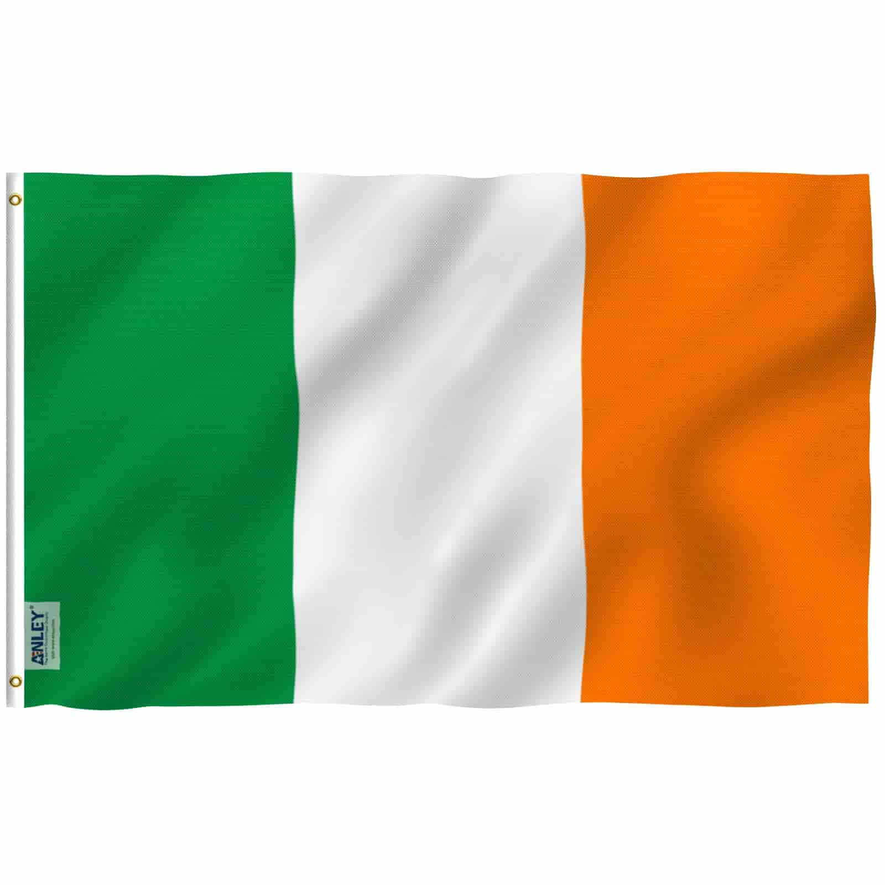

Abner Goncalves Da Silva
About Me
My name is Abner. I was born in Brasil but currently live in Ireland with my wife. I am currently working as a Senior Customer Service Agent at a tech company called Workhuman. I love to travel and visit new places. I am currently studying Software Development at BYU-I.
Dublin, Ireland

Ireland is a small island nation famous for its lush green landscapes, ancient castles, traditional music, and friendly culture. Interestingly, Ireland has no native snakes, is home to over 30,000 castles and castle ruins, and its national symbol is the harp—not the shamrock.